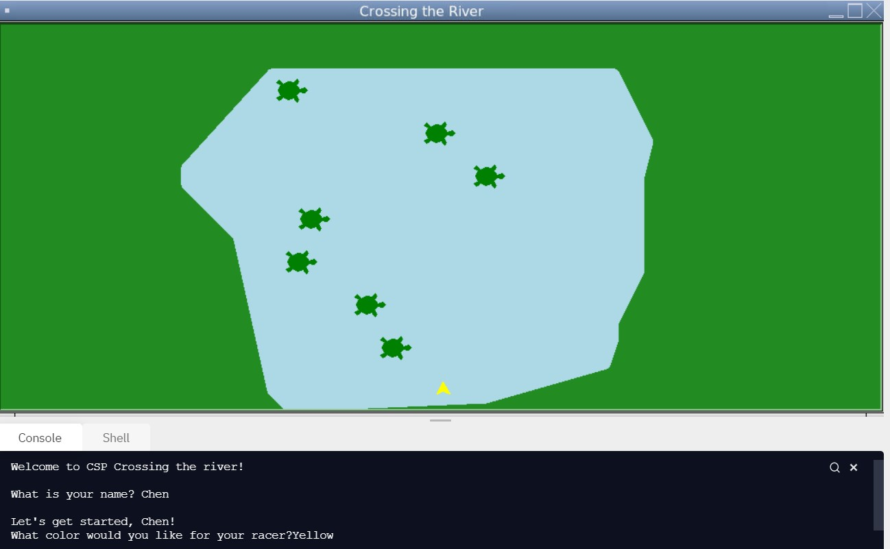
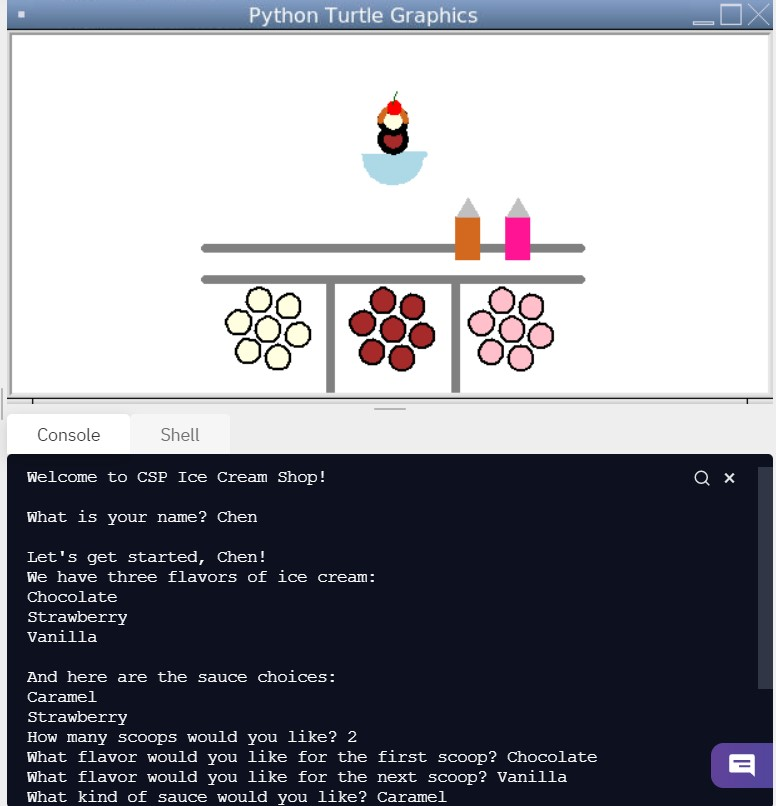
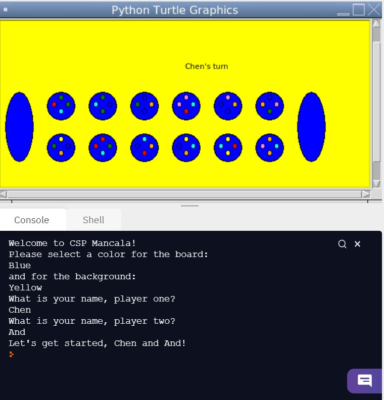
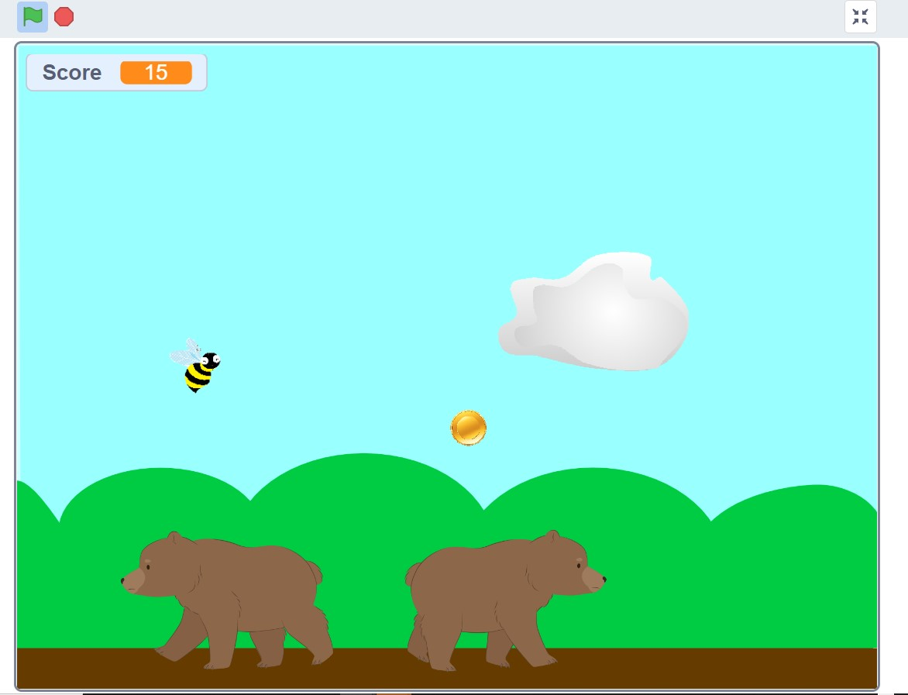

Portfolio
Portfolio Page
Second day scratch project
Using App Inventor to make app game Duck Hunter
Interactive Fiction Rags to Riches
Black Jack game written in Python
Modified bits in pictures
Use data files to create graphs
Using netlogo do remix of illusions
Interactive Fiction Rags to Riches

1.2.5 PLTW Project
Group members: Jeffrey Kressin, Mackenzie Bivin, Madden Lai, Chenhsin Huang
Turtles move across the river and the user has to avoid them and get across

1.1.9 PLTW Project
Group members: Nolan Flores, Jonathan Jeong, Carolynn Rui, Chenhsin Huang
Creates ice cream based on the user's preferences from the menu

1.3.1 PLTW Project
Group members: Yuki Kako, Adam Smith, Megha Kataki, Chenhsin Huang
Creates a player turn strategy based game called Mancala

CSP Scratch
Group members: Andrea Kelly, Quentin Phillips, Krish Thakkar, Chenhsin Huang
Creates a bee collecting coin game where you have to get back to the hive